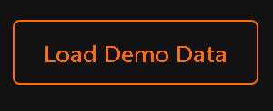
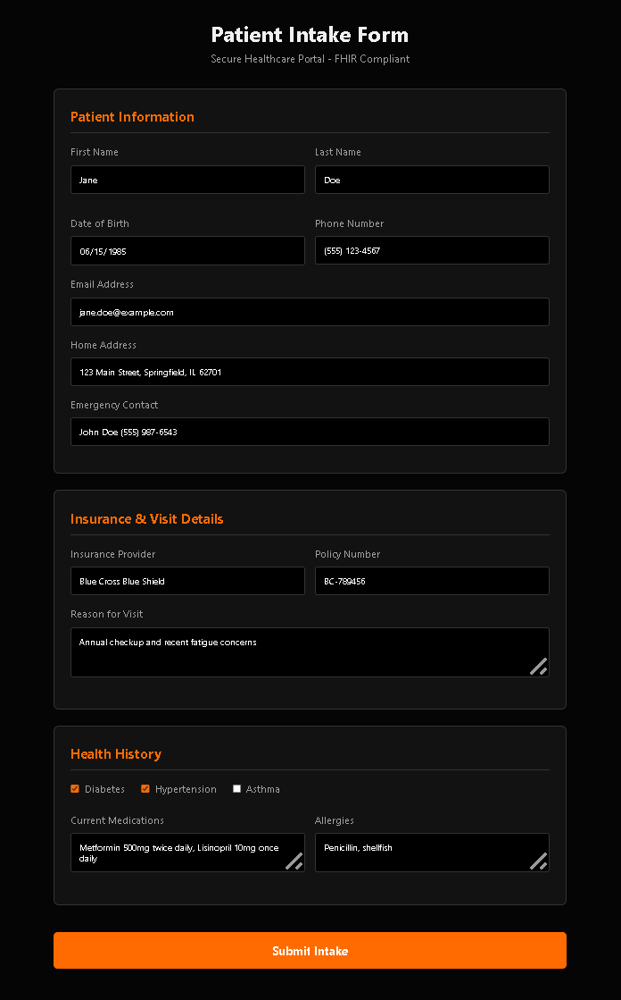
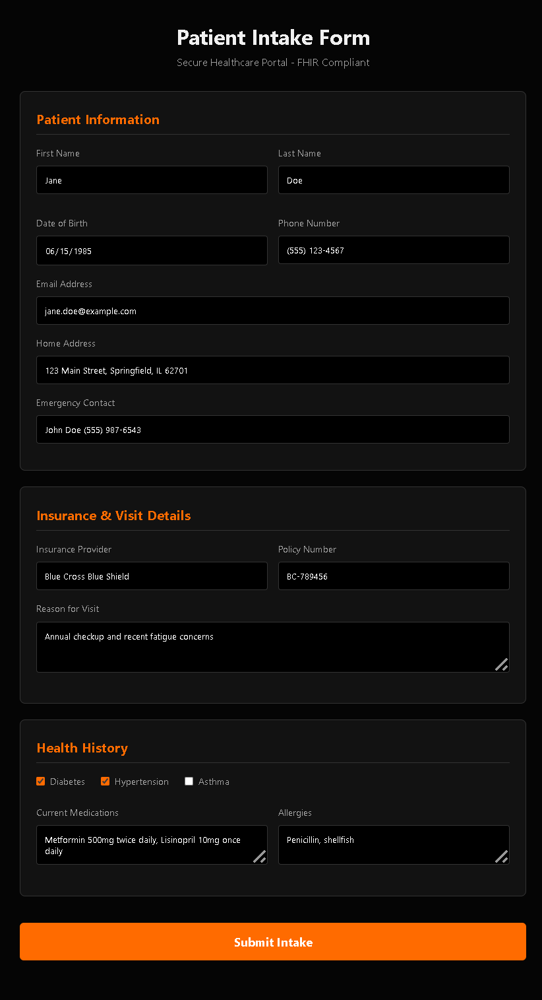
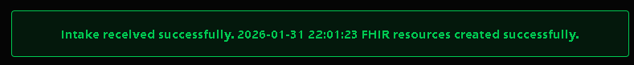
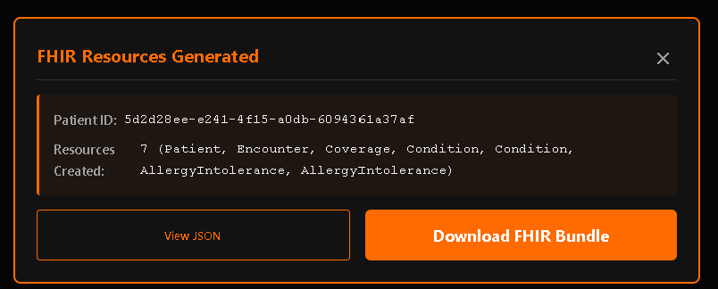
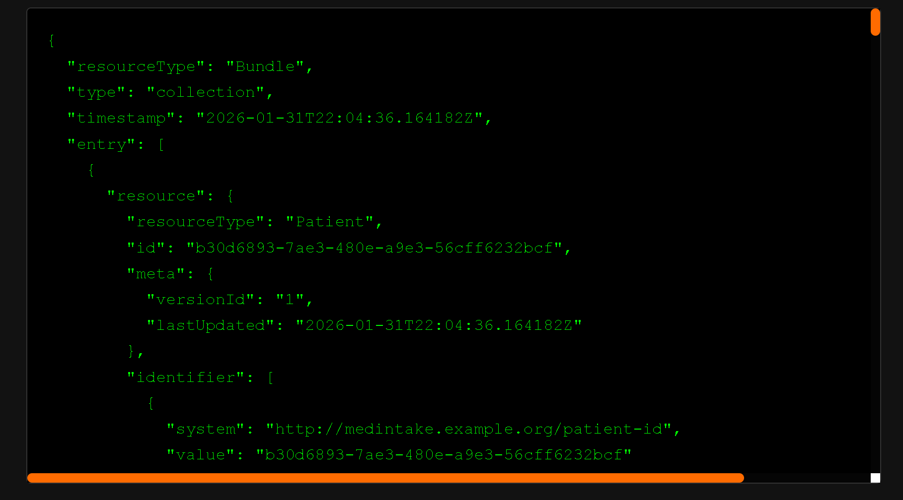
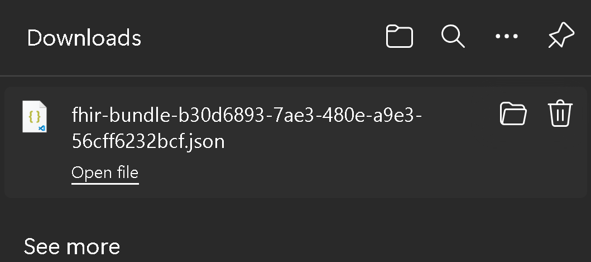
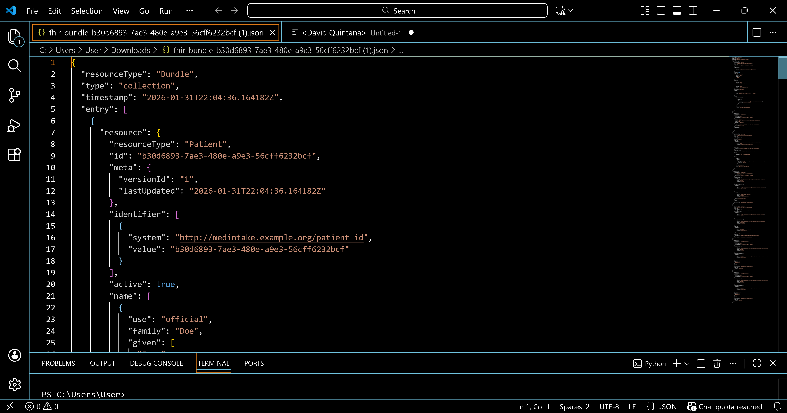

Bilingual Patient Intake Portal with FHIR Integration Portal de Registro de Pacientes Bilingüe con Integración FHIR
Project Summary Resumen del Proyecto
This patient intake portal automates data collection and directly transforms form inputs into HL7 FHIR R4 resources. The interface is fully bilingual (English + Spanish) and features instant language switching. The FastAPI backend validates and structures all data into a FHIR Bundle containing Patient, Encounter, Coverage, Condition, and AllergyIntolerance resources, ready for immediate ingestion into EHR or FHIR servers. Este portal de registro de pacientes automatiza la recopilación de datos y transforma directamente las entradas del formulario en recursos HL7 FHIR R4. La interfaz es completamente bilingüe (inglés + español) y cuenta con cambio de idioma instantáneo. El backend de FastAPI valida y estructura todos los datos en un Bundle FHIR que contiene recursos Patient, Encounter, Coverage, Condition y AllergyIntolerance, listos para ingestión inmediata en servidores EHR o FHIR.
Business Context Contexto Empresarial
Manual patient registration at healthcare facilities introduces inefficiencies, transcription errors, and language barriers that compromise both care quality and operational flow. This prototype demonstrates how structured data capture combined with FHIR compliance eliminates redundant paperwork, improves data accuracy, and ensures interoperability across clinical systems. El registro manual de pacientes en instalaciones de atención médica introduce ineficiencias, errores de transcripción y barreras lingüísticas que comprometen tanto la calidad de la atención como el flujo operativo. Este prototipo demuestra cómo la captura de datos estructurada combinada con el cumplimiento de FHIR elimina el papeleo redundante, mejora la precisión de los datos y garantiza la interoperabilidad entre sistemas clínicos.
Real-Time Language Switching Cambio de Idioma en Tiempo Real
The bilingual toggle button allows instant switching between English and Spanish without page reload. Every element of the interface—labels, placeholders, validation messages, and instructions—updates simultaneously. El botón de alternancia bilingüe permite el cambio instantáneo entre inglés y español sin recargar la página. Cada elemento de la interfaz—etiquetas, marcadores de posición, mensajes de validación e instrucciones—se actualiza simultáneamente.
Persistent Preference: Language selection is saved to browser storage, ensuring patients return to their preferred language. Preferencia Persistente: La selección de idioma se guarda en el almacenamiento del navegador, asegurando que los pacientes regresen a su idioma preferido.

One-Click Demo Data Datos de Demostración con Un Clic
The "Load Demo Data" button pre-populates the entire form with realistic patient information in a single click. This feature is essential for testing, training staff, conducting live demonstrations, and validating end-to-end workflows. El botón "Cargar Datos de Demostración" rellena previamente todo el formulario con información realista de pacientes con un solo clic. Esta función es esencial para pruebas, capacitación de personal, demostraciones en vivo y validación de flujos de trabajo de extremo a extremo.

Comprehensive Test Data Datos de Prueba Completos
Once loaded, demo data fills every field with realistic information including patient demographics, insurance details, medical conditions, allergies, and emergency contacts. This ensures consistent testing scenarios and helps identify any validation or workflow issues. Una vez cargados, los datos de demostración llenan cada campo con información realista que incluye datos demográficos del paciente, detalles de seguro, condiciones médicas, alergias y contactos de emergencia. Esto asegura escenarios de prueba consistentes y ayuda a identificar cualquier problema de validación o flujo de trabajo.
Time Savings: Eliminates manual data entry during demos and testing, reducing setup time from 5+ minutes to under 5 seconds. Ahorro de Tiempo: Elimina la entrada manual de datos durante demostraciones y pruebas, reduciendo el tiempo de configuración de más de 5 minutos a menos de 5 segundos.

Complete Form Interface Interfaz de Formulario Completo
The full intake form captures comprehensive patient information including demographics, insurance coverage, medical history, current conditions, allergies, and emergency contacts. Every field is validated in real-time to ensure data quality before submission. El formulario de registro completo captura información integral del paciente que incluye datos demográficos, cobertura de seguro, historial médico, condiciones actuales, alergias y contactos de emergencia. Cada campo se valida en tiempo real para garantizar la calidad de los datos antes del envío.
Smart Validation: Real-time field validation prevents errors and guides patients to provide complete, accurate information. Validación Inteligente: La validación de campos en tiempo real previene errores y guía a los pacientes para proporcionar información completa y precisa.

Clear User Feedback Retroalimentación Clara al Usuario
Upon successful submission, users receive immediate visual confirmation with a timestamp showing when their intake was processed. The green success banner provides reassurance that their data was received and FHIR resources were created successfully. Tras el envío exitoso, los usuarios reciben confirmación visual inmediata con una marca de tiempo que muestra cuándo se procesó su registro. El banner verde de éxito proporciona seguridad de que sus datos fueron recibidos y los recursos FHIR se crearon exitosamente.
User Experience: Clear status indicators reduce patient anxiety and confirm successful completion of the intake process. Experiencia del Usuario: Indicadores de estado claros reducen la ansiedad del paciente y confirman la finalización exitosa del proceso de registro.

FHIR R4 Bundle Generation Generación de Bundle FHIR R4
The FastAPI backend receives raw form data and assembles it into a structured FHIR Bundle containing standardized resources: Patient, Encounter, Coverage, Condition, and AllergyIntolerance. El backend de FastAPI recibe datos de formulario sin procesar y los ensambla en un Bundle FHIR estructurado que contiene recursos estandarizados: Patient, Encounter, Coverage, Condition y AllergyIntolerance.
Automatic SNOMED CT Encoding Codificación SNOMED CT Automática
Conditions are automatically encoded using SNOMED CT terminology (e.g., Diabetes → 73211009). All clinical resources reference the Patient via subject.reference, ensuring proper linking across the FHIR ecosystem. Las condiciones se codifican automáticamente usando terminología SNOMED CT (por ejemplo, Diabetes → 73211009). Todos los recursos clínicos referencian al paciente a través de subject.reference, asegurando vinculación apropiada en el ecosistema FHIR.

JSON Preview & Review Vista Previa y Revisión JSON
After submission, the fully formed FHIR Bundle is displayed in a syntax‑highlighted format. Clinical staff or administrators can verify data integrity before pushing to EHR or FHIR server. Después del envío, el Bundle FHIR completamente formado se muestra en un formato con resaltado de sintaxis. El personal clínico o los administradores pueden verificar la integridad de los datos antes de enviarlos al servidor EHR/FHIR.
Quality Control: Human-in-the-loop review ensures data accuracy before it enters clinical systems. Control de Calidad: La revisión humana en el bucle asegura la precisión de los datos antes de que entren en los sistemas clínicos.

Bundle Download & Export Descarga y Exportación de Bundle
Download the complete FHIR Bundle as a JSON file for immediate integration, archiving, or manual upload to FHIR-compliant systems. The export is standards-compliant and ready for production use. Descargue el Bundle FHIR completo como archivo JSON para integración inmediata, archivo o carga manual a sistemas compatibles con FHIR. La exportación cumple con estándares y está lista para uso en producción.

Developer-Ready Output Salida Lista para Desarrolladores
The downloaded FHIR Bundle opens cleanly in any JSON editor, showing proper structure, resource linking, and SNOMED CT encoding for immediate development or API integration. El Bundle FHIR descargado se abre limpiamente en cualquier editor JSON, mostrando estructura apropiada, vinculación de recursos y codificación SNOMED CT para desarrollo inmediato o integración API.
Standards Compliance: Structures follow HL7 FHIR R4 guidelines for Patient, Encounter, Coverage, Condition, and AllergyIntolerance. Cumplimiento de Estándares: Las estructuras siguen las directrices HL7 FHIR R4 para Patient, Encounter, Coverage, Condition y AllergyIntolerance.
FHIR Integration Details Detalles de Integración FHIR
Bundle Structure Estructura del Bundle
A FHIR Bundle (type: collection) contains all resources as separate entries, allowing for atomic transactions and proper resource versioning. Un Bundle FHIR (tipo: collection) contiene todos los recursos como entradas separadas, permitiendo transacciones atómicas y versionado apropiado de recursos.
Resource Linking Vinculación de Recursos
All clinical resources (Condition, AllergyIntolerance, Encounter) reference the Patient resource via subject.reference, creating a complete clinical record graph. Todos los recursos clínicos (Condition, AllergyIntolerance, Encounter) referencian al recurso Patient a través de subject.reference, creando un grafo completo de registro clínico.
Validation & Security Validación y Seguridad
Strict Pydantic validation prevents malformed or malicious data. Scoped CORS policy ensures production-ready security. Human-in-the-loop review via JSON preview before data enters clinical systems. La validación estricta de Pydantic previene datos malformados o maliciosos. La política CORS con alcance definido asegura seguridad lista para producción. Revisión humana en el bucle a través de vista previa JSON antes de que los datos entren en sistemas clínicos.
Measurable Impact Impacto Medible
100% FHIR-Native 100% Nativo de FHIR
Direct output ready for EHR ingestion without manual transformation or data mapping. Salida directa lista para ingestión en EHR sin transformación manual o mapeo de datos.
50% Time Reduction Reducción del 50% en Tiempo
Automation and demo loading cut intake time in half compared to manual paper forms. La automatización y carga de demostración reducen el tiempo de registro a la mitad en comparación con formularios en papel manuales.
Zero Transcription Errors Cero Errores de Transcripción
Direct patient-to-FHIR workflow eliminates manual data entry and associated errors. El flujo de trabajo directo de paciente a FHIR elimina la entrada manual de datos y errores asociados.
Improved Health Equity Equidad en Salud Mejorada
Full Spanish support removes language barriers for non-English speaking patients. El soporte completo en español elimina las barreras lingüísticas para pacientes que no hablan inglés.
Technology Stack Pila Tecnológica
Frontend: HTML5, CSS3, JavaScript (ES6+) with real-time language switching and form validation Frontend: HTML5, CSS3, JavaScript (ES6+) con cambio de idioma en tiempo real y validación de formularios
Backend: FastAPI (Python 3.x), Uvicorn ASGI server for async processing Backend: FastAPI (Python 3.x), servidor ASGI Uvicorn para procesamiento asíncrono
Standards: HL7 FHIR R4 (Patient, Encounter, Coverage, Condition, AllergyIntolerance), SNOMED CT coding Estándares: HL7 FHIR R4 (Patient, Encounter, Coverage, Condition, AllergyIntolerance), codificación SNOMED CT
Validation: Pydantic models, CORS Middleware, comprehensive error handling Validación: Modelos Pydantic, Middleware CORS, manejo integral de errores